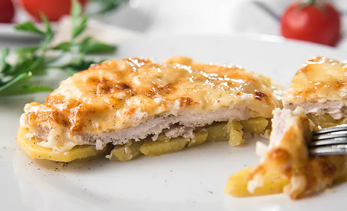

Home
French Meat Recipe

Description
Meat in French is a dish with a lot of advantages. It cooks quickly, looks delicious and always turns out great.
You can
prepare it not only for everyday lunches or dinners, but also for the holiday table.
Options for cooking meat in French include different orders of layers of ingredients and the degree of their
readiness
when baking. Today we will cook meat in French with potatoes and tomatoes. It's very juicy and tasty!
Ingredients
- Potatoes - 800g
- Pork - 600g
- Tomato - 260g
- Onions - 200g
- Sour cream - 350-400g
- Cheese (hard variety) - 100g
- Garlic - 2 medium cloves
- Salt - to taste
- Pepper, b.g. - to taste
- Vegetable oil - for greasing the mold
Cooking process
- The necessary set of products for preparing a dish.
- Cut the meat, in this case pork, into slices 1 cm thick. Lightly beat each slice and sprinkle with salt and
pepper.
- Let's prepare the sauce. To do this, add garlic, passed through a press, to the sour cream and stir. If desired,
you can
add ground black pepper and chopped herbs.
- Cut potatoes and tomatoes into thin slices, and onions into half rings. Add salt and pepper to taste to the
potatoes and
stir.
Pour a small amount of vegetable oil into the bottom of a mold measuring 32 cm by 22 cm, place the potatoes in one
layer
and brush with sauce.
- Then lay out half the onion. Place the meat on top and brush it with sauce.
- Next, lay out the second half of the onion.
- Place the remaining potatoes on the onion and brush them with sauce.
- The last layer is tomatoes. Distribute the sauce over them, cover the future French-style meat with potatoes and
tomatoes with foil and place in an oven preheated to 200 degrees for about an hour (depend on your oven). Then
remove
the foil, sprinkle grated cheese on top and continue baking for another 10-15 minutes.
- The aromatic French-style meat with potatoes and tomatoes is ready!